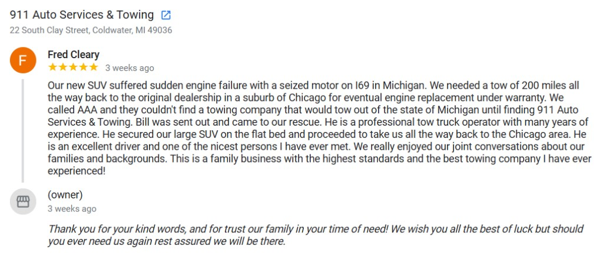
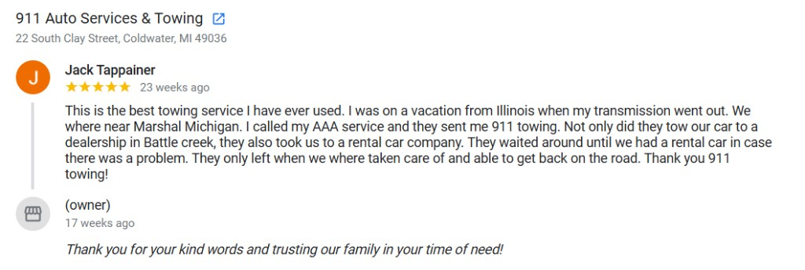
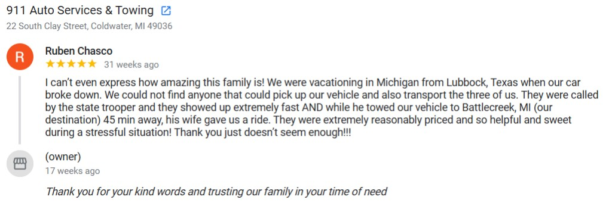

Automotive repair
Diagnostics, maintenance, and repairs to keep your vehicle safe and reliable.
517-677-3173 Learn about our shop What we work on911 Auto Service Center serves Coldwater and the surrounding area with professional automotive repair and responsive towing & roadside assistance — all from one trusted shop.
Shop hours: Mon-Thu, 8am-5pm · Towing & roadside: 24/7 · Walk-in service at 22 S Clay St — Coldwater, MI 49036
Whether you need dependable repairs or help when you are stuck on the road, our team is here for you.
Diagnostics, maintenance, and repairs to keep your vehicle safe and reliable.
517-677-3173 Learn about our shop What we work onWhen you need a tow or roadside help, call our dedicated line for fast assistance.
517-279-2010 Towing & roadsideTires, batteries, wheels, tools, and shop surplus — inventory changes, so call before you drive in.
View listingsConveniently located in Coldwater with service for drivers across Branch County and nearby communities.
These are a few recent reviews from real customers. We have many more like these — click below to read all of our Google reviews.



Open the map for directions to 22 S Clay St, Coldwater, MI 49036. Parking and entrance details may vary — call ahead if you need help locating the shop.